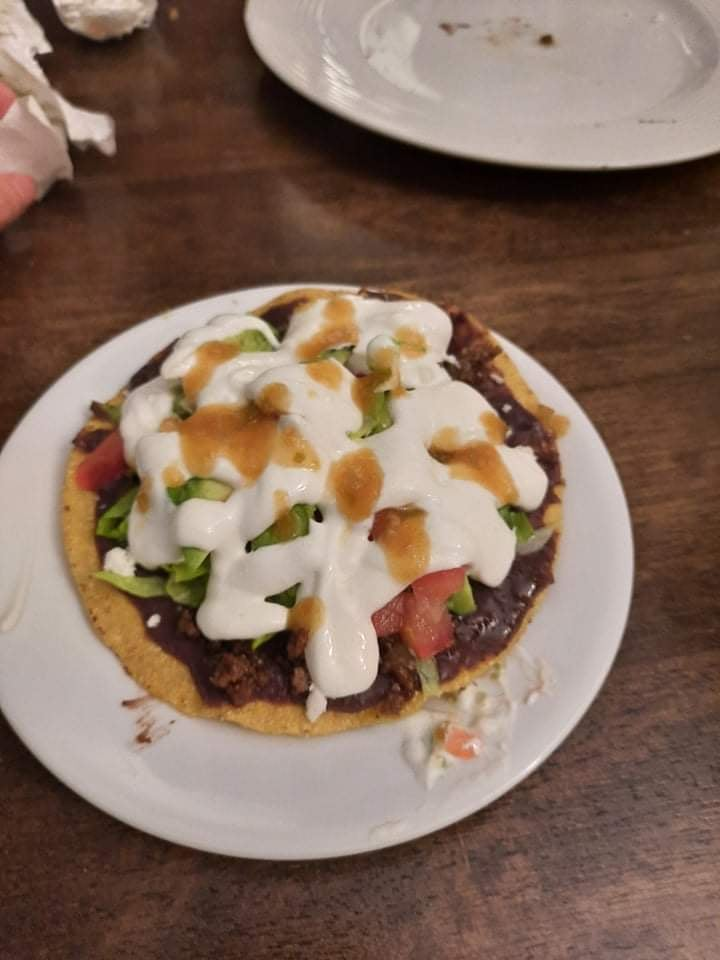

Tostadas

Ingredients
- Tostadas
- Black beans, canned or fresh
- White onion, diced
- Ground beef
- Roma tomatoes
- Serrano peppers
- Salt & Pepper
- Lime
- Crema Mexicana
- Queso Fresco
- Other desired toppings such as lettuce, avacado, lime wedges etc.
I don't have specific measurements for this recipe. Everything is made to taste so just experiment with how you like it.
Cook the ground beef in a pan with some white onion and salt.
If using canned black beans, drain and rinse them. Then, cook in a pan with white onion, salt, and pepper. After onion is transclusent and beans are warmed through, put mixture in blender and blend to desired consistency. You may need to add a little bit of water to make mixture thin enough to spread on the tostada.
Heat a small pot of water to boiling or close to boiling. Cut a shallow "X" on the bottom of each tomato to help the skin come of more easily. Add tomatoes and serrano peppers to the hot water and blanche for about 1 minute. Remove the tomatoes and peppers to a colander and run very cold water over them. Remove skins and core and put tomatoes in a food processor. Cut the stem off of the peppers and add to same blender (NOTE: serrano peppers can be significantly spicer than jalapenos so you may want to use less than you would for a normal salsa. The seeds can also be removed to reduce heat). Add in onion, lime juice, and salt and blend to desired thickness. Adjust to taste.
Take a tostada and top with beans, meat, salsa, and the rest of the toppings.